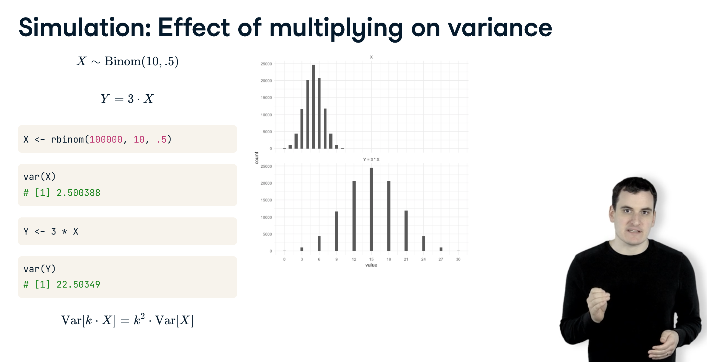

library(tidyverse)
library(mosaic)
library(ggformula)
library(broom)
library(patchwork)
theme_set(theme_bw())
set.seed(123456)DataCamp: Foundations of probability in R
The binomial distribution
Statistics studies how observed data can be used to infer the underlying model of the DGP.
Probability studies how observed data are generated from a model of the DGP. It is the foundation of statistical inference!
Flipping coins in R
By exploring coin flipping with the R programming language, you’ll learn the basic laws and methods of probability.
Each time I flip a fair coin, it has a 50% chance of being heads and a 50% chance of being tails. Before I look at this coin, it is a random variable. We’ll call one case of simulating from this random variable, a “draw”.
If you don’t have a coin handy, you can use R to simulate this random event. Specifically, you can use the rbinom() function (or the rflip() function). This is named because it’s a random draw from a binomial distribution. rbinom() takes three arguments: first is the number of random draws we’re doing: a draw is a single outcome from a random variable. Second is the number of coins we’re flipping on each draw, which is also just one. Third is the probability of a “heads”, which for a fair coin is 50%. There are two possible outcomes of this function: 0 and 1. In this case we got a result of “1”- throughout this course, we’re going to interpret a 1 as “heads”. This is a random process, which means that if run the same line of code again, we might get 0, which we will interpret to mean tails. If we ran it a third time, we could get either 1, heads, or 0, tails, unpredictably.
n is the number of observations, size is the number of trials/draws, prob is the probability of heads on each trial.
Flipping one coin, one time:
rflip(n = 1)
Flipping 1 coin [ Prob(Heads) = 0.5 ] ...
H
Number of Heads: 1 [Proportion Heads: 1]rbinom(n = 1, size = 1, prob = 0.5)[1] 1Flipping 10 coins, one time:
rflip(n = 10)
Flipping 10 coins [ Prob(Heads) = 0.5 ] ...
T T T T H T H T H H
Number of Heads: 4 [Proportion Heads: 0.4]rbinom(n = 10, size = 1, prob = 0.5) [1] 1 1 1 1 1 0 0 1 0 0Flipping one coin, 10 times:
do(10) * rflip(n = 1)rbinom() returns the number of heads out of the 10 trials/coin flips
rbinom(n = 1, size = 10, prob = 0.5)[1] 3Flipping 10 coins, 10 times:
do(10) * rflip(n = 10)rbinom(n = 10, size = 10, prob = 0.5) [1] 2 5 6 6 3 5 7 6 4 6Unfair/biased coin:
rbinom(n = 10, size = 10, prob = 0.8) [1] 8 9 10 7 10 9 7 9 9 7Consider this process of flipping a number of biased coins and counting the resulting heads. Each outcome, X, is a random variable that follows a binomial distribution. A probability distribution is a mathematical description of the possible outcomes of a random variable. We describe the binomial distribution based on two parameters: the size, or number of flips, and p, the probability that each is heads.
\[ X \sim \text{Binomial}(n, p) \]
gf_dist("binom", size = 10, prob = 0.8)Probability mass/density function
\[ X \sim \text{Binomial}(n = 10, p = 0.5) \]
\[ P(X = 5) \]
Calculate the approximate value of \(P(X = 5)\) by simulation:
heads <- rbinom(n = 100000, size = 10, prob = 0.5)gf_props(~ heads, fill = ~ (heads == 5))mean(heads == 5) # P(X = 5)[1] 0.2457Calculate the exact value of \(P(X = 5)\):
dbinom(x = 5, size = 10, prob = 0.5)[1] 0.2461Cumulative probability mass/density function
\[ X \sim \text{Binomial}(n = 10, p = 0.5) \]
\[ P(X \le 4) \]
Calculate the approximate value of \(P(X \le 4)\) by simulation:
heads <- rbinom(n = 100000, size = 10, prob = 0.5)gf_props(~ heads, fill = ~ (heads <= 4))mean(heads <= 4) # P(X <= 4)[1] 0.3757Calculate the exact value of \(P(X \le 4)\):
pbinom(q = 4, size = 10, prob = 0.5)[1] 0.377Expected value and variance of a probability distribution
Laws of probability
Probability of event A AND event B (product rule)
Simulation:
A <- rbinom(100000, 1, 0.5)
B <- rbinom(100000, 1, 0.5)
mean(A == 1) # P(A = 1) = 0.5 [1] 0.4995mean(B == 1) # P(B = 1) = 0.5[1] 0.5018mean(A & B) # P(A = 1 AND B = 1) = P(A = 1) * P(B = 1) = 0.5 * 0.5 = 0.25[1] 0.2513A <- rbinom(100000, 1, 0.2)
B <- rbinom(100000, 1, 0.7)
mean(A == 1) # P(A = 1) = 0.2 [1] 0.1984mean(B == 1) # P(B = 1) = 0.7[1] 0.7008mean(A & B) # P(A = 1 AND B = 1) = P(A = 1) * P(B = 1) = 0.2 * 0.7 = 0.14[1] 0.1382Probability of event A OR event B (sum rule)
Simulation:
A <- rbinom(100000, 1, 0.5)
B <- rbinom(100000, 1, 0.5)
mean(A == 1) # P(A = 1) = 0.5 [1] 0.4985mean(B == 1) # P(B = 1) = 0.5[1] 0.502mean(A | B) # P(A = 1 OR B = 1) = P(A = 1) + P(B = 1) - P(A = 1 AND B = 1) = 0.5 + 0.5 - 0.25 = 0.75[1] 0.7511A <- rbinom(100000, 1, 0.2)
B <- rbinom(100000, 1, 0.7)
mean(A == 1) # P(A = 1) = 0.2 [1] 0.1982mean(B == 1) # P(B = 1) = 0.7[1] 0.7002mean(A | B) # P(A = 1 OR B = 1) = P(A = 1) + P(B = 1) - P(A = 1 AND B = 1) = 0.2 + 0.7 - 0.14 = 0.76[1] 0.7591A <- rbinom(100000, 1, 0.2)
B <- rbinom(100000, 1, 0.7)
C <- rbinom(100000, 1, 0.4)
mean(A == 1) # P(A = 1) = 0.2 [1] 0.1993mean(B == 1) # P(B = 1) = 0.7[1] 0.7009mean(C == 1) # P(C = 1) = 0.4[1] 0.398mean(A | B | C)[1] 0.8552Multiplying a random variable by a constant
X <- rbinom(100000, 10, 0.5)
mean(X)[1] 5Y <- 3 * X
mean(Y)[1] 15
X <- rbinom(100000, 10, 0.5)
var(X)[1] 2.505Y <- 3 * X
var(Y)[1] 22.55gf_props(~ X) |> gf_lims(x = c(0, 30)) / gf_props(~ Y) |> gf_lims(x = c(0, 30))Adding two random variables
X <- rbinom(100000, 10, 0.5)
mean(X)[1] 4.999Y <- rbinom(100000, 100, 0.2)
mean(Y)[1] 20.02Z = X + Y
mean(Z)[1] 25.02X <- rbinom(100000, 10, 0.5)
var(X)[1] 2.507Y <- rbinom(100000, 100, 0.2)
var(Y)[1] 15.92Z = X + Y
var(Z)[1] 18.46gf_props(~ X) |> gf_lims(x = c(0, 45)) / gf_props(~ Y) |> gf_lims(x = c(0, 45)) / gf_props(~ Z) |> gf_lims(x = c(0, 45))Bayesian statistics
Bayesian updating
We’ve been talking about biased coins: coins that have a chance of heads that isn’t 50%. My friend Nick and I made a bet on this coin- heads I pay him, tails he pays me. It’s Nick’s coin, though, and I’m not sure I trust him, because I think he might have given me a trick coin that so that it comes up heads 75% of the time. How can we tell whether this coin is fair, or biased?
We could run an experiment. Suppose after flipping twenty times, we see 14 heads, and 6 tails. Now that we’ve seen that, do we believe that the coin is fair or biased, and could we give a probability? We’re describing the process of updating our beliefs after seeing evidence, which is at the heart of Bayesian statistics. We will use Bayesian statistics to determine whether a coin is fair or biased based on evidence.
In other words, we see 14 out of 20 flips from a coin that is either fair (50% chance of heads) or biased (75% chance of heads). How likely is it that the coin is fair?
Let’s imagine that before we ran the experiment, we think there is a fifty percent chance the coin is fair, and fifty percent chance it’s biased. Picture that as two piles of coins: one of 50,000 fair coins, one of 50,000 biased coins.
Imagine that you took every coin from each of the two piles, flipped it 20 times, and recorded the results. You would get two histograms like this: one for the fair coins, one for the biased coins. Here’s the trick of Bayesian statistics: when we see 14 heads out of 20, and we know that it’s either a fair or biased coin, we know that we’re in one of those red bars in the histogram. All we need to know is which.
fair <- rbinom(50000, 20, 0.5)
fair_14 <- sum(fair == 14)
fair_14[1] 1828biased <- rbinom(50000, 20, 0.75)
biased_14 <- sum(biased == 14)
biased_14[1] 8585biased_14 / (fair_14 + biased_14)[1] 0.8245\[ \begin{aligned} P(\pi = 0.75 \mid H = 14) & = \frac{P(\pi = 0.75) \cdot P(H = 14 \mid \pi = 0.75)}{P(\pi = 0.75) \cdot P(H = 14 \mid \pi = 0.75) + P(\pi = 0.5) \cdot P(H = 14 \mid \pi = 0.5)} \\ & = \frac{0.5 \times 0.1686}{0.5 \times 0.1686 + 0.5 \times 0.03696} \\ & = 0.8202 \end{aligned} \]
Prior probability
we’ve been determining whether a coin we got from Nick is fair or biased. We’ve treated it as if before we saw any flips, there’s a 50% chance that the coin is fair, and a 50% chance that the coin is biased towards heads. But let’s say I generally trust Nick. When he gave me this coin, I figured he probably wasn’t trying to trick me. I’m just testing the coin to be completely safe. Let’s say that when Nick gives me the coin, I think there’s only 10% chance that it’s biased, and a 90% chance that it’s fair. This is called a prior probability, and it’s an important part of Bayesian statistics.
We know that Nick got his coin from one of these two piles. And by comparing the sizes of the red bars- the cases where a coin resulted in exactly 14 heads- we were able to find a conditional probability. However, this time, instead of having two equally sized piles, let’s start with 90,000 coins in the fair pile and only 10,000 biased coins in the other pile. This represents our prior probability, giving the fair coins an advantage. Notice that in the resulting histograms, the relative height of the red bars- those with 14 heads- has changed. In fact, even though each of the fair coins individually was less likely to result in 14 heads than a biased coin was, there were more fair coins that ended up with 14 than biased ones.
This simulation approach works even if there are more than two possibilities for the probability of heads. For example, you could start with three piles of coins, one that has a 25% chance, one that has a 50% chance, and one that has a 75% chance.
fair <- rbinom(90000, 20, 0.5)
fair_14 <- sum(fair == 14)
fair_14[1] 3274biased <- rbinom(10000, 20, .75)
biased_14 <- sum(biased == 14)
biased_14[1] 1729biased_14 / (fair_14 + biased_14)[1] 0.3456\[ \begin{aligned} P(\pi = 0.75 \mid H = 14) & = \frac{P(\pi = 0.75) \cdot P(H = 14 \mid \pi = 0.75)}{P(\pi = 0.75) \cdot P(H = 14 \mid \pi = 0.75) + P(\pi = 0.5) \cdot P(H = 14 \mid \pi = 0.5)} \\ & = \frac{0.1 \times 0.1686}{0.1 \times 0.1686 + 0.9 \times 0.03696} \\ & = 0.3364 \end{aligned} \]
Bayes’ theorem
prob_14_fair <- dbinom(14, 20, 0.5) * 0.9
prob_14_biased <- dbinom(14, 20, 0.75) * 0.1
prob_14_biased / (prob_14_fair + prob_14_biased)[1] 0.3364probability_fair <- dbinom(14, 20, 0.5) * 0.9
probability_fair[1] 0.03327probability_biased <- dbinom(14, 20, 0.75) * 0.1
probability_biased[1] 0.01686probability_biased / (probability_fair + probability_biased)[1] 0.3364Suppose we see 16 heads out of 20 flips, which would normally be strong evidence that the coin is biased. However, suppose we had set a prior probability of a 99% chance that the coin is fair (50% chance of heads), and only a 1% chance that the coin is biased (75% chance of heads).
Recall that Bayes’ theorem looks like:
\[ \Pr(\text{fair}|\text{16 heads})=\frac{\Pr(\text{16 heads} \mid \text{fair})\Pr(\text{fair})}{\Pr(\text{16 heads} \mid \text{fair})\Pr(\text{fair})+\Pr(\text{16 heads} \mid \text{biased})\Pr(\text{biased})} \]
# Use dbinom to find the probability of 16/20 from a fair or biased coin
probability_fair <- dbinom(16, 20, 0.5) * 0.99
probability_biased <- dbinom(16, 20, 0.75) * 0.01
# Use Bayes' theorem to find the posterior probability that the coin is fair
probability_fair / (probability_fair + probability_biased)[1] 0.7069Related probability distributions
The normal distribution
Flipping 10, 100, 1000 coins:
gf_dist("binom", size = 10, prob = 0.5) /
gf_dist("binom", size = 100, prob = 0.5) /
gf_dist("binom", size = 1000, prob = 0.5)A binomial distribution with a large size (e.g., 1000) approximates the normal distribution!

binomial <- rbinom(100000, 1000, 0.5)
(expected_value <- 1000 * 0.5)[1] 500(variance <- 1000 * 0.5 * (1 - 0.5))[1] 250normal <- rnorm(100000, expected_value, sqrt(variance))compare_histograms <- function(variable1, variable2) {
x <- tibble(value = variable1, variable = "Variable 1")
y <- tibble(value = variable2, variable = "Variable 2")
ggplot(rbind(x, y), aes(value)) +
geom_histogram() +
facet_wrap(~ variable, nrow = 2)
}compare_histograms(binomial, normal)gf_density(~ binomial, fill = "orange", alpha = 0.5) |> gf_density(~ normal, color = "red", alpha = 0)If you flip 1000 coins that each have a 20% chance of being heads, what is the probability you would get 190 heads or fewer?
You’ll get similar answers if you solve this with the binomial or its normal approximation.
# simulations from the normal and binomial distributions
binom_sample <- rbinom(100000, 1000, 0.2)
normal_sample <- rnorm(100000, 200, sqrt(160))
# use binom_sample to estimate the probability of <= 190 heads
mean(binom_sample <= 190)[1] 0.2266# use normal_sample to estimate the probability of <= 190 heads
mean(normal_sample <= 190)[1] 0.213# calculate the probability of <= 190 heads with pbinom
pbinom(190, 1000, 0.2)[1] 0.2274# calculate the probability of <= 190 heads with pnorm
pnorm(190, 200, sqrt(160))[1] 0.2146When we flip a lot of coins, it looks like the normal distribution is a pretty close approximation. What about when we flip only 10 coins, each still having a 20% chance of coming up heads? Is the normal still a good approximation?
# simulations from the normal and binomial distributions
binom_sample <- rbinom(100000, 10, 0.2)
normal_sample <- rnorm(100000, 2, sqrt(1.6))compare_histograms(binomial, normal)
gf_dist("binom", size = 10, prob = 0.5) |> gf_dist("norm", mean = 5, sd = sqrt(2.5), color = "red") /
gf_dist("binom", size = 100, prob = 0.5) |> gf_dist("norm", mean = 50, sd = sqrt(25), color = "red") /
gf_dist("binom", size = 1000, prob = 0.5) |> gf_dist("norm", mean = 500, sd = sqrt(250), color = "red")The Poisson distribution
If \(n \ge 100\) and \(np \le 10\), the Poisson distribution (taking \(\lambda = np\)) can provide a very good approximation to the binomial distribution.
One of the useful properties of the Poisson distribution is that when you add multiple Poisson distributions together, the result is also a Poisson distribution.
# simulate 100,000 draws from Poisson(1)
X <- rpois(100000, 1)
# simulate 100,000 draws from Poisson(2)
Y <- rpois(100000, 2)
# add X and Y together to create Z
Z = X + Y
# use compare_histograms to compare Z to the Poisson(3)
compare_histograms(Z, rpois(100000, 3))The geometric distribution
# simulate 100 instances of flipping a 20% coin
flips <- rbinom(n = 100, size = 1, prob = 0.2)
# use which to find the first case of 1 ("heads")
which(flips == 1)[1][1] 4# replicate this 100,000 times using replicate()
replications <- replicate(100000, which(rbinom(100, 1, 0.2) == 1)[1])
# histogram the replications with qplot
gf_histogram(~ replications)# generate 100,000 draws from the corresponding geometric distribution
geom_sample <- rgeom(100000, 0.2)
# Compare the two distributions with compare_histograms
compare_histograms(replications, geom_sample)`stat_bin()` using `bins = 30`. Pick better value with `binwidth`.A new machine arrives in a factory. This type of machine is very unreliable: every day, it has a 10% chance of breaking permanently. How long would you expect it to last?
Notice that this is described by the cumulative distribution of the geometric distribution, and therefore the pgeom() function. pgeom(X, 0.1) would describe the probability that there are X working days before the day it breaks (that is, that it breaks on day X + 1).
# probability the machine breaks on 5th day or earlier
pgeom(4, 0.1)[1] 0.4095# probability the machine is still working on 20th day
1-pgeom(19, 0.1)[1] 0.1216